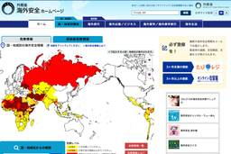

TRAICY（トライシー）
https://www.traicy.com/
TRAICY（トライシー）は、航空・LCC・鉄道・ホテル・ゲストハウス・バックパッカーズの最新情報を発信している、日本最大級のトラベルメディアです。
フィード
GENSEN HOLDINGS、大江戸温泉物語Premiumシリーズを長野県・信州昼神温泉郷にリブランドオープン
TRAICY（トライシー）
GENSEN HOLDINGSは、信州昼神温泉郷 昼神グランドホテル天心を改修し、大江戸温泉物語Premiumシリーズとして2027年3月ごろにリブランドオープンする。 建物は地上7階建て。長野県南部の阿智村・昼神温泉郷 […]投稿 GENSEN HOLDINGS、大江戸温泉物語Premiumシリーズを長野県・信州昼神温泉郷にリブランドオープン は TRAICY（トライシー） に最初に表示されました。
4時間前
熊本県内のバス・市電など、タッチ決済で運賃半額 10月29日から
TRAICY（トライシー）
熊本県内でタッチ決済を導入する交通事業者各社は、「熊本応援プロジェクト」を10月29日に開始する。 乗車端末を設置した対象のバス全路線、熊本市電、熊本電気鉄道、南阿蘇鉄道で、タッチ決済による乗車運賃を半額とする。Visa […]投稿 熊本県内のバス・市電など、タッチ決済で運賃半額 10月29日から は TRAICY（トライシー） に最初に表示されました。
5時間前
ジャルパック、国内ダイナミックパッケージでタイムセール 最大3万円割引クーポン配布
TRAICY（トライシー）
ジャルパック（JALパック）は、国内航空券と宿泊がセットになった「JALダイナミックパッケージ」で10月23日から11月2日午後11時57分までタイムセールを開催している。 「期間限定タイムセール！」と記載のある全方面の […]投稿 ジャルパック、国内ダイナミックパッケージでタイムセール 最大3万円割引クーポン配布 は TRAICY（トライシー） に最初に表示されました。
5時間前
ジェットスター・ジャパン、国内線7路線224便を追加設定
TRAICY（トライシー）
ジェットスター・ジャパンは、冬スケジュールに国内線7路線で計224便を追加設定する。 東京/成田〜福岡線が96便、大阪/関西〜沖縄/那覇線が64便、東京/成田〜沖縄/那覇線が28便、東京/成田〜大阪/関西線が14便、東京 […]投稿 ジェットスター・ジャパン、国内線7路線224便を追加設定 は TRAICY（トライシー） に最初に表示されました。
9時間前

クラブツーリズム、中東5か国行きのツアー販売・催行中止
TRAICY（トライシー）
クラブツーリズムは、中東情勢に伴う対応を更新した。 外務省が危険情報「レベル2」もしくは「レベル3」を発出した、カタールとアラブ首長国連邦（UAE）、サウジアラビア、ヨルダン、オマーンを目的地とするツアーの販売・催行を中 […]投稿 クラブツーリズム、中東5か国行きのツアー販売・催行中止 は TRAICY（トライシー） に最初に表示されました。
11時間前
HIS、若年層向け旅行ブランド「TABIOOPS!」を販売開始
TRAICY（トライシー）
HISは、若年層向け旅行ブランド「TABIOOPS!」を10月1日に開始した。 学校や仕事を終えた後に出発する「退勤後ツアー」や、絶叫、グルメ、景色などを組み合わせた旅行商品を設定する。綿密な計画に縛られない旅を提案し、 […]投稿 HIS、若年層向け旅行ブランド「TABIOOPS!」を販売開始 は TRAICY（トライシー） に最初に表示されました。
12時間前
JR東日本、内房線の姉ケ崎〜長浦駅間が11月9日に運転再開 久留里線の一部は復旧断念
TRAICY（トライシー）
JR東日本は10月23日、台風25号の影響で運転を見合わせている千葉県内の線区について、運転再開の見通しを発表した。 内房線の姉ケ崎〜長浦駅間は、11月9日の始発から運転を再開する見込み。特急「さざなみ」も同日から全列車 […]投稿 JR東日本、内房線の姉ケ崎〜長浦駅間が11月9日に運転再開 久留里線の一部は復旧断念 は TRAICY（トライシー） に最初に表示されました。
14時間前
東京湾大華火祭、きょう10月24日開催 首都高晴海線・台場線などで交通規制
TRAICY（トライシー）
東京湾大華火祭の開催に伴い、きょう10月24日に首都高速道路と会場周辺の道路・歩道の一部で交通規制が実施される。 会場周辺道路では午後3時半から、首都高速道路では午後5時から交通規制を実施する。歩道の通行止め規制は午後2 […]投稿 東京湾大華火祭、きょう10月24日開催 首都高晴海線・台場線などで交通規制 は TRAICY（トライシー） に最初に表示されました。
15時間前
中国東方航空、名古屋/中部〜上海/浦東〜蘭州線を運休 10月23日で
TRAICY（トライシー）
中国東方航空は、名古屋/中部〜上海/浦東〜蘭州線を10月23日をもって運休する 同路線を運航していたMU720/719便は、名古屋/中部〜上海/浦東線のみを1日1往復運航する。機材はエアバスA320型機を使用する。 この […]投稿 中国東方航空、名古屋/中部〜上海/浦東〜蘭州線を運休 10月23日で は TRAICY（トライシー） に最初に表示されました。
1日前
外務省、欧州での抗議活動で注意喚起 フランス発の抗議運動が欧州全域に拡大
TRAICY（トライシー）
外務省は、欧州での抗議活動を受けた注意喚起として、欧州全域を対象とする広域情報を発出した。 欧州の複数の国で大規模な抗議活動が頻発しており、大部分は平和的な活動であるものの、一部の過激な集団が暴徒化し、放火や略奪等が発生 […]投稿 外務省、欧州での抗議活動で注意喚起 フランス発の抗議運動が欧州全域に拡大 は TRAICY（トライシー） に最初に表示されました。
1日前
国土交通省、JTAの伊丹空港乗り入れを許可
TRAICY（トライシー）
国土交通省は、運輸審議会の答申を受け、日本トランスオーシャン航空（JTA）の伊丹空港への乗り入れを許可した。 10月25日から、大阪/伊丹〜沖縄/那覇線を1日2往復運航する。機材はボーイング737-800型機を使用する。 […]投稿 国土交通省、JTAの伊丹空港乗り入れを許可 は TRAICY（トライシー） に最初に表示されました。
1日前
チェジュ航空、仙台〜ソウル/仁川線を開設 2027年1月8日から週3往復
TRAICY（トライシー）
チェジュ航空は、仙台〜ソウル/仁川線を2027年1月8日に開設する。 水・金・日曜の週3往復を運航する。機材はボーイング737-8型機またはボーイング737-800型機を使用する。所要時間は仙台発が3時間10分、ソウル/ […]投稿 チェジュ航空、仙台〜ソウル/仁川線を開設 2027年1月8日から週3往復 は TRAICY（トライシー） に最初に表示されました。
1日前
H.I.S.ホテルホールディングス、約14万人分の個人情報が流出の可能性
TRAICY（トライシー）
H.I.S.ホテルホールディングスは10月22日、自社サイトの会員向けメールマガジン配信に利用している外部サービスの運営会社が不正アクセスを受け、個人情報が流出した可能性があると発表した。 ホテル会員向けに毎月メールマガ […]投稿 H.I.S.ホテルホールディングス、約14万人分の個人情報が流出の可能性 は TRAICY（トライシー） に最初に表示されました。
1日前

HIS、首都圏発着「決算大感謝セール」の海外航空券＋ホテルのタイムセール開催中 10月26日正午まで
TRAICY（トライシー）
エイチ・アイ・エス（HIS）は、「決算大感謝セール」で、首都圏発着の海外航空券＋ホテルの「タイムセール」を10月22日正午から26日正午まで開催している。 東京/成田・東京/羽田発着の例では、釜山3日間（東京/成田発着、 […]投稿 HIS、首都圏発着「決算大感謝セール」の海外航空券＋ホテルのタイムセール開催中 10月26日正午まで は TRAICY（トライシー） に最初に表示されました。
1日前
エティハド航空、東京/成田〜アブダビ線にエアバスA350-1000型機投入 12月15日から
TRAICY（トライシー）
エティハド航空は、東京/成田〜アブダビ線の運航機材を変更する。 現在はエアバスA380型機で運航している。12月15日から2027年3月27日（東京/成田発翌日）まで、エアバスA350-1000型機で運航する。翌日以降は […]投稿 エティハド航空、東京/成田〜アブダビ線にエアバスA350-1000型機投入 12月15日から は TRAICY（トライシー） に最初に表示されました。
1日前
ANA、アシアナ航空とのマイレージ提携を12月16日に終了
TRAICY（トライシー）
全日本空輸（ANA）は、アシアナ航空とのマイレージ提携を12月16日に終了する。 ANAマイレージクラブでのアシアナ航空便搭乗に伴うマイル積算は10月15日搭乗分をもって終了した。マイルの事後登録は10月31日のウェブ受 […]投稿 ANA、アシアナ航空とのマイレージ提携を12月16日に終了 は TRAICY（トライシー） に最初に表示されました。
1日前
ヒルトン、宿泊時の支払いにポイントを使える「Pay with Points」を開始 アメリカで先行
TRAICY（トライシー）
ヒルトンは、ロイヤリティプログラム「ヒルトン・オナーズ」の新特典として、滞在時の請求にポイントを充当できる「Pay with Points」を開始した。 対象は、シルバー、ゴールド、ダイヤモンド、ダイヤモンドリザーブ会員 […]投稿 ヒルトン、宿泊時の支払いにポイントを使える「Pay with Points」を開始 アメリカで先行 は TRAICY（トライシー） に最初に表示されました。
1日前
トリップドットコム、海外航空券でタイムセール ソウル行き6,900円など
TRAICY（トライシー）
トリップドットコム（Trip.com）は、「Super Flight Day」を10月25日午前10時から午後11時59分まで開催する。 エコノミークラス片道航空券を、特別価格で販売する。目的地と片道運賃は、ソウル行きが […]投稿 トリップドットコム、海外航空券でタイムセール ソウル行き6,900円など は TRAICY（トライシー） に最初に表示されました。
1日前
楽天トラベル、「最高級宿スペシャルオファー」 最大30％オフ
TRAICY（トライシー）
楽天グループは、旅行予約サイト「楽天トラベル」で「最高級宿スペシャルオファー」を10月15日午前10時から30日午前9時59分まで開催する。 対象施設では特別プランを設定するほか、宿クーポンと楽天トラベルクーポンの併用で […]投稿 楽天トラベル、「最高級宿スペシャルオファー」 最大30％オフ は TRAICY（トライシー） に最初に表示されました。
1日前
ANA、「ちいかわ」コラボキャンペーンを実施 抽選でオリジナルグッズプレゼント
TRAICY（トライシー）
全日本空輸（ANA）は、「ちいかわと旅にでよう！キャンペーン」を実施する。 第1弾では、ANAアプリをダウンロードのうえ、ANAマイレージクラブ会員情報でログインし、「MYキャンペーン」からキャンペーン参加登録をした人の […]投稿 ANA、「ちいかわ」コラボキャンペーンを実施 抽選でオリジナルグッズプレゼント は TRAICY（トライシー） に最初に表示されました。
1日前
日の丸交通とNearMe、戦略的業務提携 スマートシャトルを移管し一体運営へ
TRAICY（トライシー）
日の丸交通とNearMeは、戦略的業務提携に関する契約を締結した。 NearMeの完全子会社である、SmartShuttleの車両と従業員を、日の丸交通のグループ会社である日の丸交通千住へ移管し、一体運営する。 日の丸交 […]投稿 日の丸交通とNearMe、戦略的業務提携 スマートシャトルを移管し一体運営へ は TRAICY（トライシー） に最初に表示されました。
1日前
スカイマーク、東京/羽田〜札幌/千歳・福岡・鹿児島・沖縄/那覇線で臨時便 10月・11月に計28便
TRAICY（トライシー）
スカイマークは、東京/羽田〜札幌/千歳・福岡・鹿児島・沖縄/那覇線で10月・11月に臨時便を運航する。 東京/羽田〜福岡線は16便、東京/羽田〜沖縄/那覇線は4便、東京/羽田〜札幌/千歳線は6便、東京/羽田〜鹿児島線は2 […]投稿 スカイマーク、東京/羽田〜札幌/千歳・福岡・鹿児島・沖縄/那覇線で臨時便 10月・11月に計28便 は TRAICY（トライシー） に最初に表示されました。
1日前
東海道・山陽新幹線「のぞみ」、年末年始と成人の日連休は全車指定席に
TRAICY（トライシー）
JR東海とJR西日本は、年末年始期間中に東海道・山陽新幹線「のぞみ」号の自由席の設定を取り止め、全席指定席として運行する。 実施期間は12月25日から2027年1月5日までと、1月9日から11日まで。対象区間と列車は東海 […]投稿 東海道・山陽新幹線「のぞみ」、年末年始と成人の日連休は全車指定席に は TRAICY（トライシー） に最初に表示されました。
2日前
チェジュ航空、「今安セール」開催 2月の日韓線が片道総額14,050円から
TRAICY（トライシー）
チェジュ航空は、日韓線を対象とした「今安セール」を10月21日から27日まで販売している。 対象路線と受託手荷物が含まれない「BASIC」運賃の片道最低運賃は以下の通り。燃油サーチャージや空港利用料などは含まれている。搭 […]投稿 チェジュ航空、「今安セール」開催 2月の日韓線が片道総額14,050円から は TRAICY（トライシー） に最初に表示されました。
2日前
「コートヤード・バイ・マリオット新横浜駅」、12月18日開業
TRAICY（トライシー）
マリオット・インターナショナルとJR東海、新横浜ステーション開発、JR東海ホテルズは、「コートヤード・バイ・マリオット新横浜駅」を12月18日に開業する。 建物はJR新横浜駅直上（駅ビル内）に位置し、13階から19階まで […]投稿 「コートヤード・バイ・マリオット新横浜駅」、12月18日開業 は TRAICY（トライシー） に最初に表示されました。
2日前

外務省、サウジアラビアの8州を危険レベル引き上げ 渡航中止勧告
TRAICY（トライシー）
外務省は、サウジアラビアの危険情報を更新し、首都リヤドや聖地マッカ・マディーナを含む8州をレベル3（渡航中止勧告）に引き上げた。 引き上げの対象は、リヤド州、東部州（イエメンとの国境地帯を除く）、マッカ州、マディーナ州、 […]投稿 外務省、サウジアラビアの8州を危険レベル引き上げ 渡航中止勧告 は TRAICY（トライシー） に最初に表示されました。
2日前
JALグループ、台風30号で特別対応拡大 10月22日〜24日の奄美・沖縄発着便
TRAICY（トライシー）
日本航空（JAL）グループは、台風30号の接近による悪天候が見込まれるため、航空券の特別対応を実施する。 10月22日午後1時15分現在、特別対応を実施するのは、10月22日から24日にかけて徳之島・沖永良部・与論・宮古 […]投稿 JALグループ、台風30号で特別対応拡大 10月22日〜24日の奄美・沖縄発着便 は TRAICY（トライシー） に最初に表示されました。
2日前
ANA、台風30号で特別対応延長 10月21日〜24日の沖縄発着便
TRAICY（トライシー）
全日本空輸（ANA）は、台風30号の影響が見込まれるため、航空券の特別対応を実施する。 10月22日午前11時45分現在、特別対応を実施するのは、10月21日正午から24日にかけて宮古・石垣、10月22日から24日にかけ […]投稿 ANA、台風30号で特別対応延長 10月21日〜24日の沖縄発着便 は TRAICY（トライシー） に最初に表示されました。
2日前
沖縄ツーリスト、個人情報漏えいの可能性でサービスを一時停止 レンタカーなど5サービス
TRAICY（トライシー）
沖縄ツーリスト（OTS）は10月21日、利用者の個人情報が漏えいした可能性を確認したことから、一部サービスを一時停止していると発表した。 一時停止しているのは、OTSレンタカー、OTS HOTEL、OTS ACTIVIT […]投稿 沖縄ツーリスト、個人情報漏えいの可能性でサービスを一時停止 レンタカーなど5サービス は TRAICY（トライシー） に最初に表示されました。
2日前
ANA、「ちいかわ」コラボグッズ第1弾の販売制限を延長
TRAICY（トライシー）
全日空商事は、特別塗装機「ちいかわジェット」の就航を記念し、全日本空輸（ANA）の制服を着た「ちいかわ」のキャラクターを描いたコラボレーショングッズ第1弾の販売制限を延長する。 当初は10月23日から25日にかけて、販売 […]投稿 ANA、「ちいかわ」コラボグッズ第1弾の販売制限を延長 は TRAICY（トライシー） に最初に表示されました。
2日前